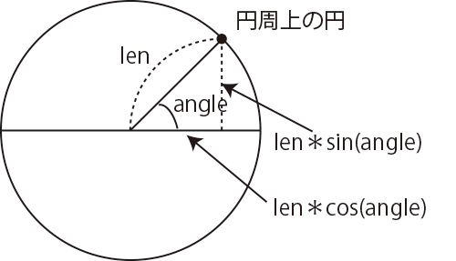

算術計算
図形を円の軌跡の上で動かしたり、振動させたりするときに、三角関数が役立ちます。また偶然の要素を入れた動きをさせたいとき、乱数が必要になります。さまざまな算術計算のための関数が提供されています。乱数
サイコロの目が同じ確率で出るように、同じ確率で、引数で指定した範囲の数をひとつ返します。■ random(high) 0以上high未満の間の乱数(Number型)が得られます。
■ random(low, high) low以上とhigh未満の間の乱数(Number型)が得られます。
■ random(配列) 配列の中の要素をランダムに返します。
【例】random(1.2, 10) 1.2以上と10未満の間のいずれかの数を返す。
【例】let cities = ["京都", "名古屋", "新横浜", "品川"];
random(cities) 配列citiesの中のいずれかの要素を返す。
整数の乱数がほしい場合は、小数点以下を切り捨てる関数floor()を使います。floor()の引数に乱数random()を指定すると作り出された乱数の整数部分だけがとり出されます。
【例】var a = floor(random(6)); 0,1,2,3,4,5のいずれかの値がaに入る。
三角関数
三角関数の計算をします。引数のangleにはラジアン単位の角度を指定します。関数radians()を使って、度単位の角度をラジアン単位に変換できます。
ラジアンは度と同じ角度を表す単位で、180度がπラジアンです。
1度は、π／180ラジアンになります。
1ラジアンは、円周上から半径と同じ長さの円弧を切り出すとした時、その円弧を挟む2つの半径が作る角度です。
■ sin(angle) angleのsinの値を計算する。結果は-1から1の間の値。1ラジアンは、円周上から半径と同じ長さの円弧を切り出すとした時、その円弧を挟む2つの半径が作る角度です。
■ cos(angle) angleのcosの値を計算する。結果は-1から1の間の値。

次のリストは、直径100の円周上で、小さい円を動かす例です。円周上の座標は右の図のように、sin()関数と、cos()関数を使って計算できます。これら関数の引数は円周上の点の、円の中心からみた角度です。円周上時計の3時の位置が角度0度で、時計回りに角度が大きくなります。
クリックで開始⇔停止
【リスト 三角関数：円周上を移動】
var r = 50;
var a = 0; //角度(度単位)
var x;
var y;
function setup() {
createCanvas(150,150);
fill(200,0,0);
noStroke();
background(255);
}
function draw() {
translate(width/2, height/2); //座標原点を画面の中央へ移動
x = r * cos(radians(a)); //円周上a度の位置のx座標を計算
y = r * sin(radians(a)); //円周上a度の位置のy座標を計算
ellipse(x, y, 10, 10); //画面中央に円
a = a + 1; //1度ずつ右へ回る
if(a>360) { //1周したら角度を0にし、今までの描画を消す
background(255);
a = 0;
}
}
上のプログラムでは、aの値が360になったら0にしていますが、aを増加し続けたらどうなるでしょうか。aはNumber型の変数で、64ビットで数値(小数点数)を表します。そこに入る値の最大の値は約1.8×10の308乗です。
■ tan(angle) angleのtanの値(sinとcosの比率)を計算します。結果は-無限大から無限大の間の値。
■ atan2(y, x) 指定された点の中心から見た角度を計算します(x軸の正方向が0度)。結果はラジアン単位の角度で、-π(PI)からπの間の値。
次のリストは、マウスで長方形を回転させる例ですが、画面中央からみたマウスの角度の計算にatan2()関数を使っています。 atan2()関数の引数にはマウス位置を指定しますが、mouseX, mouseYの値は、左上角を原点とした時の座標であるため、中央を原点とした座標に換算しています。
マウスに付いて回転
【リスト 三角関数：マウスに付いて回転】
var w = 80; //四角形の幅
var h = 10; //四角形の高さ
function setup() {
createCanvas(150,150);
}
function draw() {
background(255);
translate(width/2, height/2); //座標原点を画面の中央へ移動
var a = atan2(mouseY-height/2, mouseX-width/2); //画面中央からみたマウス位置の角度
rotate(a); //マウスの位置に応じて回転
rect(-w/2, -h/2, w, h); //長方形を描く。長方形がマウスで回転する。
ellipse(0, 0, 10, 10); //画面中央に円
}
対数・指数
引数に指定した数(Number型)の対数・指数を計算します。■ exp(n) 自然対数、e(2.71828...)を底とする対数の値(Number型)を返します。
■ log(n) 自然指数、e(2.71828...)を底とする指数の値(Number型)を返します。
四捨五入・切り捨て・切り上げ
■ round(n) nに一番近い整数を返します(四捨五入する)。■ floor(n) nより小さいか等しい整数を返します(小数点以下を切り捨てる)。
■ ceil(n) nより大きいか等しい整数を返します(小数点以下を切り上げる)。
最大値・最小値・値の制限
引数には数値あるいは、数値の配列(下ではlistと表記)を指定します。■ max(a, b) 2つの引数の大きい値を返します。
■ max(a, b, c) 3つの引数の一番大きい値を返します。
■ max(list) データのリスト(配列)の中で一番大きい値を返します。
■ min(a, b) 2つの引数の小さい値を返します。
■ min(a, b, c) 3つの引数の一番小さい値を返します。
■ min(list) データのリスト(配列)の中で一番小さい値を返します。
■ constrain(a, low, high) 値aが最小値lowと最大値highの間を越えないように制限します。
■ abs(a) 値aの絶対値を返します。
距離の計算
2つの点の間の距離を計算します。引数、計算結果とも数値(Number型)。■ mag(a, b) 座標原点から点(a,b)までの距離を計算。
■ dist(x1, y1, x2, y2) 点(x1,y1)と点(x2,y2)の間の距離を計算。
値の換算
比例換算をする関数です。引数、計算結果とも数値(Number型)。■ lerp(v1, v2, a) v1とv2の間の比率aの位置の値を計算。aは0－1.0の間の値。aが0なら、計算結果はv1と同じ、aが0.5ならv1とv2の中央の値。
■ norm(v, start, stop) startとstopの間の値vを0－1.0の値に変換します。map(value, start, stop, 0, 1)と同じ計算になります。
■ map(v, start1, stop1, start2, stop2) start1とstop1の間の値vを、別の範囲start2とstop2の間の値に変換します。